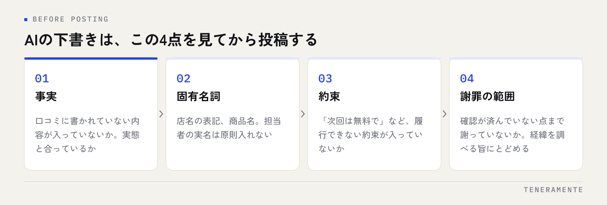

口コミへの返信は、溜まると手が止まります。1件に10分かけていた文章づくりは、AIに任せられる部分が確かにあります。ただしAIに任せられるのは下書きまでで、事実の確認と「何を書かないか」の判断は人が持ったままにする必要があります。この線引きを決めずに使い始めると、返信の数は増えても、信頼を落とす返信が混じります。
📌 この記事の結論
口コミ返信のAI活用は、作業を分けるところから始めます。文章の形を作るのはAI、事実の確認と謝罪の範囲を決めるのは人。この分担と、渡す前に決めておく店舗の条件さえ用意すれば、返信の質を落とさずに時間を減らせます。
01口コミ返信のどこをAIに任せられるか
返信を書く作業は、ひとかたまりに見えて実は5つに分かれています。口コミを読んで状況を理解する、何を伝えるか決める、文章の形にする、事実と表現を確認する、投稿する。このうちAIが速いのは3つめだけです。
| 作業 | 任せ方 | 理由 |
|---|---|---|
| 口コミを読んで状況を把握する | 人 | 来店時の記録や担当者の記憶と照らす必要がある |
| 何を伝えるか決める | 人 | 謝罪、説明、感謝のどれを前に出すかは店舗の判断 |
| 文章の形にする | AI | 言い換え、長さの調整、敬語の整えが速い |
| 事実と固有名詞を確認する | 人 | AIは書かれていない内容を補ってしまうことがある |
| 投稿する | 人 | 投稿前に必ず目を通す工程を残す |
AIを使っても、返信1件にかける時間はゼロにはなりません。それでも、白紙から書き始める負荷が消えるため、溜まっていた返信を一気に片付ける用途では効きます。返信そのものの型はGoogle口コミ返信の例文集にまとめているので、AIに渡す前の下地として使えます。
02AIに渡す前に決めておく3つのこと
毎回ゼロから指示を書くと、返信の口調が揃いません。先に次の3つを決めて、文章で保存しておいてください。
- 店舗の名乗りと一人称：店名の表記、「当店」か「スタッフ一同」か。署名を入れるかどうかも決めます
- 書かないこと：値引きや無料対応の約束、他のお客様の情報、担当者の実名、来店日などの個別情報
- 返信の長さと構成：高評価は2〜3文、低評価は4〜5文など、長さの上限を決めておく
この3つは一度決めれば使い回せます。指示文のうち毎回変わるのは口コミの本文だけという状態にしておくと、担当者が変わっても返信の雰囲気が揺れません。
03実際に使うプロンプトの型
AIに渡す指示は、口コミを貼るだけでは足りません。前提と制約を同じ形で毎回渡します。
指示文の例
「あなたは店舗の返信担当です。以下の口コミに対する返信の下書きを3案作ってください。条件：当店の名乗りは『当店』。3文以内。値引きや無料対応の約束はしない。担当者名と来店日は書かない。口コミに書かれていない事実は補わない。分からない点があれば、推測せず質問として挙げてください。」
ポイントは最後の一文です。「推測せず質問として挙げる」と指定しておくと、AIが勝手に状況を補う代わりに、確認が必要な箇所を返してきます。3案出させるのも効きます。1案だけだと、出てきた文をそのまま使いたくなるためです。
低評価への返信は、同じ型に「第三者が読む前提で書く」という条件を足してください。返信は投稿者だけでなく、検索して比較している人が読んでいます。
04出てきた下書きを人が直す4つの確認
下書きが出たら、必ず次の順で目を通します。ここを飛ばすと、AIを使った意味よりリスクが先に立ちます。

- 事実：口コミに書かれていない内容が入っていないか。設備や対応の説明が実態と合っているか
- 固有名詞：店名の表記、商品名、担当者名。実名は原則入れません
- 約束：「次回は無料で」「必ず改善します」のような、履行できない約束が入っていないか
- 謝罪の範囲：事実確認が済んでいない点まで謝っていないか。経緯を調べる旨にとどめる
とくに3つめと4つめは、AIが善意で入れてくる部分です。文章としては整っていても、店舗として約束できない内容が含まれます。投稿前に声に出して読むと、約束と断定はたいてい引っかかります。
05AIに任せないほうがよい口コミ
すべての口コミを同じ扱いにしないでください。次の3つは、下書きの作成もAIに任せず、人が最初から書いたほうが速く、安全です。
ひとつは、具体的な金銭や健康に関わる指摘です。返信の一文が、そのまま店舗の見解として扱われます。ふたつめは、事実関係が食い違っている口コミです。先に社内で経緯を確認しないと、返信の方向が決まりません。みっつめは、ポリシー違反が疑われる投稿です。返信より先に判断すべきことがあります。
返信は訂正の場ではなく、第三者に向けた説明の場です。
低評価が付いたときの仕分けと、削除を報告できる条件は低評価の口コミへの対応手順で整理しています。AIを使うかどうかの前に、この仕分けを通してください。
06やってはいけない使い方
効率化の方向を間違えると、評価を落とします。次の4つは避けてください。
1つめは、下書きをそのまま投稿することです。 読まずに投稿する運用になった時点で、事実と違う返信が混じるのは時間の問題です。
2つめは、口コミ自体をAIに書かせることです。 体験していない内容のレビューを作る行為は、プラットフォームのポリシーに反します。依頼の文面づくりにAIを使うのは問題ありませんが、レビュー本文を用意して投稿してもらう形は規約違反の側です。口コミを増やす進め方はGoogleの口コミを増やす方法に沿ってください。
3つめは、全件に同じ文を貼ることです。 AIを使うと量が出るぶん、似た文が並びがちです。読む側には一目で分かります。
4つめは、個人情報を入力することです。 口コミに実名や連絡先が書かれていても、それを含めたままAIに貼らないでください。
入力した内容の扱いを先に確認する
業務でAIサービスを使う場合、入力した内容が学習に使われるかどうかは設定とプランで変わります。顧客の情報を扱う前に、使うサービスの設定を確認し、社内で入力してよい範囲を決めておいてください。口コミ本文は公開情報ですが、社内の記録や顧客情報を一緒に貼る運用は避けます。
07週1回の運用に落とす
AI活用がうまくいかない原因は、たいてい手順ではなく運用です。次の形まで決めてください。
まず、確認の周期を決めます。毎日見るより、週に1回まとめて処理するほうが続きます。次に、担当と判断の線を決めます。下書きの作成と投稿は担当者、低評価と事実が食い違う案件は責任者、という分け方が現実的です。
そして、使った指示文を1か所に保存します。担当者の手元にしかない指示文は、引き継ぎで消えます。保存してある指示文を少しずつ直していくと、店舗の言葉に寄っていきます。返信済みかどうかの記録も残してください。返信漏れは、文章の質より先に効きます。
AIで書いた返信だと、読む人に分かってしまいませんか？
返信の数を一気に増やしても問題ありませんか？
どのAIサービスを使えばよいですか？
08まとめ：型はAI、判断は人
口コミ返信のAI活用は、作業を分けることが前提になります。文章の形を作るのはAI、事実の確認と謝罪の範囲を決めるのは人。渡す前に名乗り・書かないこと・長さを決め、出てきた下書きを事実・固有名詞・約束・謝罪の範囲の順で確認します。
やってはいけないのは、下書きをそのまま投稿することと、口コミ自体を作ることです。前者は信頼を、後者は掲載そのものを失います。効率化で削るのは書く時間であって、確認の工程ではありません。
TENERAMENTEなら、返信の指示文と確認の手順を店舗の言葉に合わせて用意し、誰が見ても同じ基準で返信できる形までご一緒に整えます。返信が担当者の文章力に左右されなくなり、溜めずに回る状態を作れます。MEO対策の進め方をご覧いただいたうえで、お問い合わせからお気軽にご相談ください。